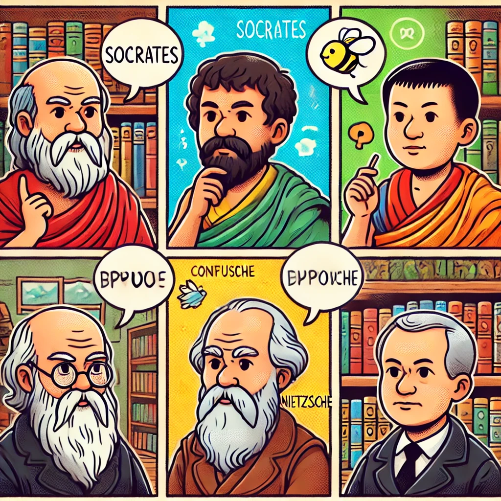

만화로 보는 3분 철학
목차
작가
김김재훈, 서정욱
출판일
2021년
감상평에 대한 AI그림
다양한 철학자들의 사상들에 대하서 쉽고 간단하게 알 수 있도록 설명되어 있어서 좋았고 만화로 이루어져 있다는 점도 책의 제목처럼 쉽게 읽을 수 있도록 도움이 되었다

감상평에 대한 AI평가
이 감상문은 책의 특징과 장점을 명확하게 전달하고 있습니다. 다양한 철학자들의 사상이 쉽게 설명되어 있다는 점과 만화 형식이 읽기 편하게 만든다는 점을 긍정적으로 평가하고 있습니다. 다만, 감상문의 내용이 조금 더 구체적인 예시를 포함하면 더 풍부한 감상이 될 수 있을 것 같습니다. 예를 들어, 어떤 철학자의 사상이 특히 인상적이었는지, 만화 형식이 어떤 방식으로 이해를 도왔는지에 대한 설명이 추가되면 더욱 완성도 높은 감상문이 될 것입니다.